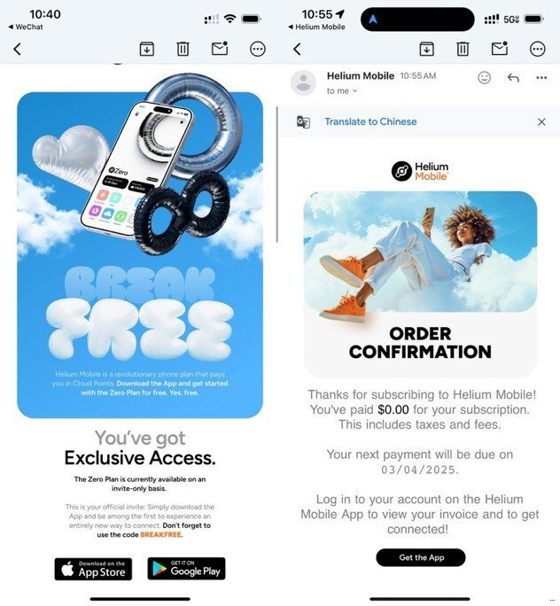
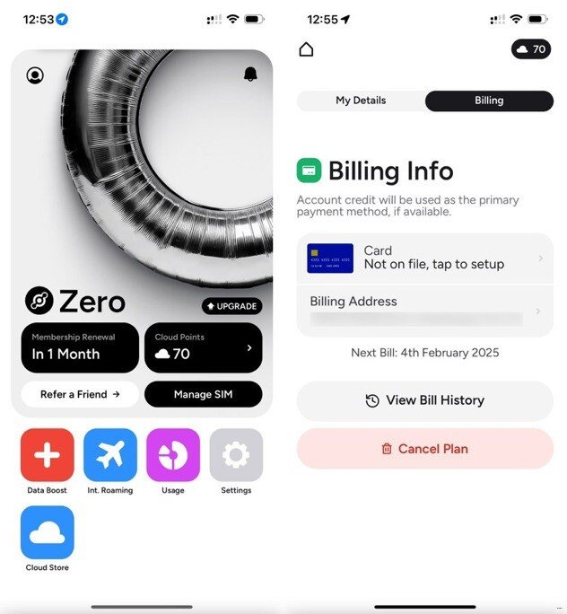
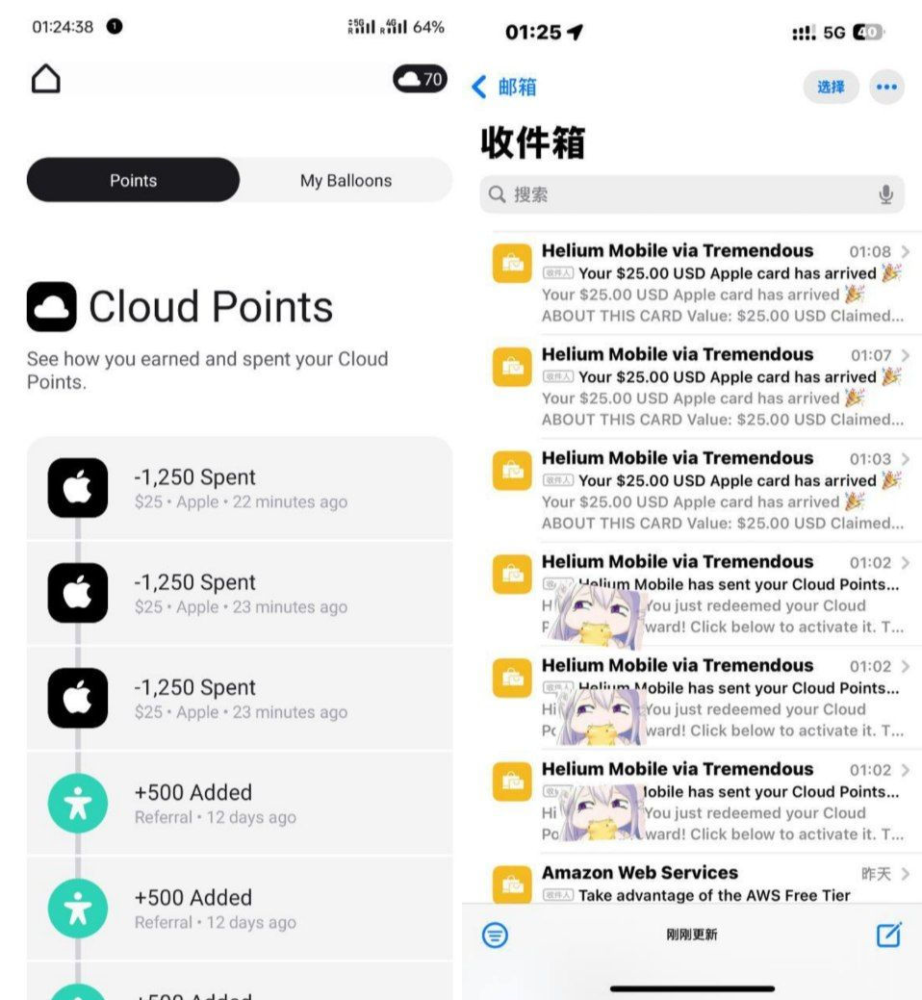
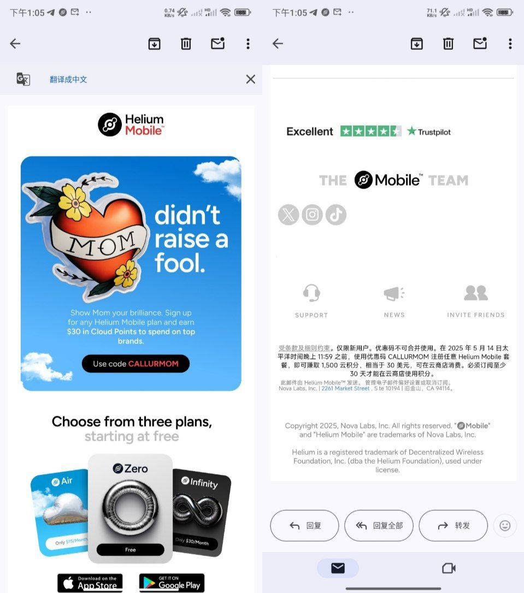
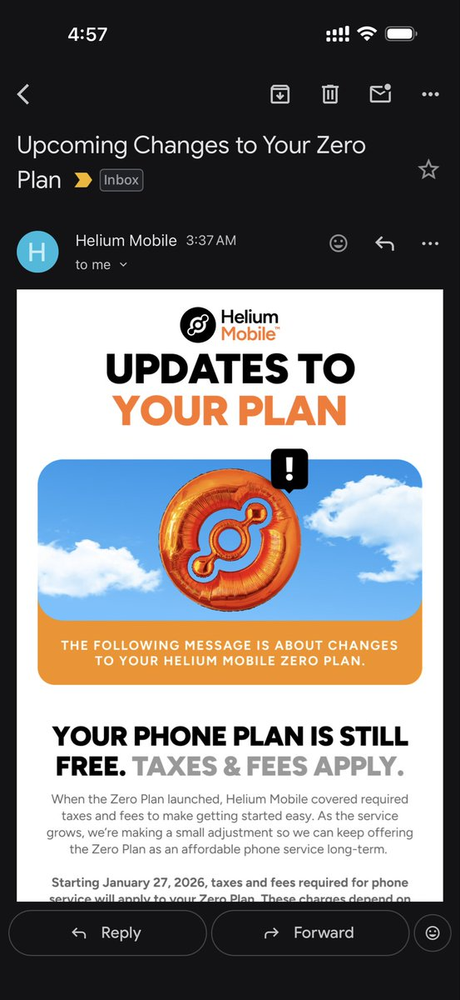

2025年2月初，美国运营商Helium Mobile宣布推出其首个免费套餐“Zero Plan”，其包含了3GB移动数据、300条短信和100分钟通话时长。
运营商向用户保证，上述免费套餐无需支付任何费用，也没有隐藏收费项目或月租。奶昔论坛也开始兴起一波Helium潮，包括传递邀请码、积分换礼品卡。
论坛的奶友把Helium称作“隐私换便利”。作为免费套餐的代价，用户需要分享其匿名位置数据，使其能够在最需要的地方建立覆盖。美国运营商在国内可以用wifi通话的，不过小运营商默认没有国际漫游。以前tello, freedompop之类的小运营商也有这样的套餐，不过tello后来转收费了，好像充20刀才可以开国际漫游？
随着“Zero Plan”的推出，Helium Mobile 进一步降低了用户的使用门槛，同时通过“云积分”计划增强了用户参与度。每个存量用户可以开3个邀请码，注册过程需要护照和人脸识别，如果是国内的手机必须支持eSIM才行！甚至有奶友不到1个月就吃满75刀换到了App Store礼品卡，拉一个人奖5刀就是500分🤗
去年5月迎来母亲节活动，只要在在2025年5月14日23:59（太平洋时间）之前使用官方邀请码CALLURMOM注册Helium Mobile可活动30美元的等值积分（1500分）。随后就是次月，也就是2025年的6月高考那天大规模封号，至于封号原因估计是有一波人用着虚假的kyc注册了一堆helium导致大规模cancel。
至于提到的免费计划转付费，那是10月2日的新公告，免费计划不需要共享位置了，但是每个月要使用蜂窝流量，不然会收回号码（或者改为付费）。可Helium并没有提供International Roaming，那只能回到美国本土才可以继续用，不少人把号码转到了Google Voice保号。注册了4个号，转了一个GV其他的我自己主动关了，即删除账户😄对于我来说，Helium这家只是拿自己的kyc换了10USD的苹果美区礼品卡罢了。
还是那句话，隐私换便利。据说Helium Mobile还是华人老板开的，收到邮件说要暂停计划，但是还是没有暂停。

运营商向用户保证，上述免费套餐无需支付任何费用，也没有隐藏收费项目或月租。奶昔论坛也开始兴起一波Helium潮，包括传递邀请码、积分换礼品卡。
论坛的奶友把Helium称作“隐私换便利”。作为免费套餐的代价，用户需要分享其匿名位置数据，使其能够在最需要的地方建立覆盖。美国运营商在国内可以用wifi通话的，不过小运营商默认没有国际漫游。以前tello, freedompop之类的小运营商也有这样的套餐，不过tello后来转收费了，好像充20刀才可以开国际漫游？
随着“Zero Plan”的推出，Helium Mobile 进一步降低了用户的使用门槛，同时通过“云积分”计划增强了用户参与度。每个存量用户可以开3个邀请码，注册过程需要护照和人脸识别，如果是国内的手机必须支持eSIM才行！甚至有奶友不到1个月就吃满75刀换到了App Store礼品卡，拉一个人奖5刀就是500分🤗
去年5月迎来母亲节活动，只要在在2025年5月14日23:59（太平洋时间）之前使用官方邀请码CALLURMOM注册Helium Mobile可活动30美元的等值积分（1500分）。随后就是次月，也就是2025年的6月高考那天大规模封号，至于封号原因估计是有一波人用着虚假的kyc注册了一堆helium导致大规模cancel。
至于提到的免费计划转付费，那是10月2日的新公告，免费计划不需要共享位置了，但是每个月要使用蜂窝流量，不然会收回号码（或者改为付费）。可Helium并没有提供International Roaming，那只能回到美国本土才可以继续用，不少人把号码转到了Google Voice保号。注册了4个号，转了一个GV其他的我自己主动关了，即删除账户😄对于我来说，Helium这家只是拿自己的kyc换了10USD的苹果美区礼品卡罢了。
还是那句话，隐私换便利。据说Helium Mobile还是华人老板开的，收到邮件说要暂停计划，但是还是没有暂停。





Helium 之前的那个免费的 Zero Plan 之前一直会发邮件说每个月必须要用 Data，不然会被停用。实际上根本不用理他，按照 FCC 的规定没欠费也不能随便回收号码。现在 Helium 又说要收 Tax 了。哎，小运营商就是这样，T-Mobile 的 $0 几年了都没收过。 https://t.co/JXYAjRzTgN